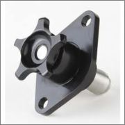
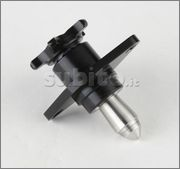
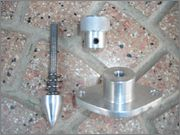
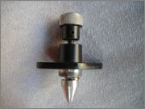
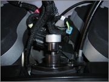
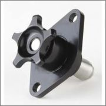
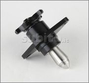
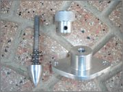
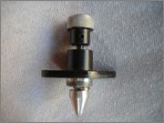
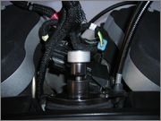

Usuarios revisando este tema :
1 Invitados:
#1
Ajustar ralentí efi mecánicamente
edu883
Enviado el: 11/04 11:34:58
Hola buenas, en un hilo de ¿que
centralita me pongo? he visto un enlace para un aparato llamado "Old
Boy" que es para ajustar el ralentí mecánicamente en las sportsters efi,
he intercambiado unos mails con el vendedor en japon y me ha dado un
precio de 137 euros aproximadamente del aparatito puesto en casa, me
imagino que me lo pararán en aduanas con lo que me saldría por unos 180
euros, como que he visto que algunos del foro conocen su funcionamiento,
me asalta una duda y es saber si una vez instalado el old boy, el
"choke electrónico" queda anulado, es decir si eso que hace de normal de
arrancar acelerada y cuando llega a una cierta temperatura baja las
revoluciones automáticamente deja de hacerlo la centralita al instalar
el old boy y hay que hacerlo con el mando a distáncia del old boy cada
vez que la arrancas como si fuera un choke de carburador. Y ¿que os
parece el precio?
#2
Re: Ajustar ralentí efi mecánicamente
prison
Enviado el: 11/04 14:39:13
Lo siento, no había oido hablar del apartao en cuestión. Y has pensado en un pigster idle control??? a mi me funciona bien.
#4
Re: Ajustar ralentí efi mecánicamente
yellow iron
Enviado el: 11/04 15:55:59
Hace tiempo estuve investigando el tema “old boy” y en Italia encontré esto, http://www.americanwheels.it/store/product.php?id_product=8727
entiendo que es lo mismo pero sin el cable ese largo para regularlo,
te dejo el enlace para que investigues un poquillo y si haces algo,
mantennos informados, seguro que te lo agradecemos. Dejo unas fotillos
que creo que si alguien es manitas y tiene acceso a un torno no tendría
mucha dificultad para hacer la pieza.










#5
Re: Ajustar ralentí efi mecánicamente
johnymaracas
Enviado el: 11/04 17:40:05
este ultimo chisme hace lo mismo
que el old boy, pero sin cable... lo bueno es que puedes regular a
placer practicamente. Lo malo es que cuando se va calentando el motor,
va subiendo de rpm y tienes que ir constantemente ajustando con este
aparato....cuando el motor está caliente y lo paras, cuando se enfría no
mantiene el ralentí y tienes que volver a actuar sobre el
chisme...vamos que te pegas el día dandole a la ruedecilla....las EFI de
inyección magnetti marelli de los twin cam tienen ajuste de ralentí en
frio y caliente...lastima que estas no. Sería lo ideal.
Por lo demas, me parece un chisme facil y simple de fabricar. El pigster idle control de la primera generación lo bordaba con su control de temperatura.....
Por lo demas, me parece un chisme facil y simple de fabricar. El pigster idle control de la primera generación lo bordaba con su control de temperatura.....
#6
Re: Ajustar ralentí efi mecánicamente
Sotoghar
Enviado el: 11/04 18:59:56
Y de esto otro que pintaba tan bien no se ha vuelto a saber nada¿¿??
http://sportster.cc/modules/newbb/viewtopic.php?topic_id=11995&forum=8
A ver si krono lee esto y se pronuncia.
saludos!
http://sportster.cc/modules/newbb/viewtopic.php?topic_id=11995&forum=8
A ver si krono lee esto y se pronuncia.
saludos!
#7
Re: Ajustar ralentí efi mecánicamente
johnymaracas
Enviado el: 11/04 19:16:09
bueno lo que diseñó este tipo es
un regulador electrónico, amos un pigster idle control que ya está
inventado (no dice si con control de temperatura o no , aunque intuyo
que no cuando habla de regular cuando el motor se caliente)...vamos otro
chisme mas igual que el pigster....sigue sin ser un "bombazo"...a ver,
sobre esto está todo inventado: tenemos chismes mecánicos y
electrónicos....
Comenta lo de que no se le enciende la luz de avería...claro, tambien dice que la deja a 900rpm...a esas rpm no se enciende ni de coña...si la baja de 800 verás tu como si enciende jejejeje...la luz de avería no depende del chisme que lleves conectado a la moto...depende de la verificacion que hace la ECM entre las rpm reales del motor con respecto a lo que la tabla de rpm dice que debería estar...ni mas ni menos.
Comenta lo de que no se le enciende la luz de avería...claro, tambien dice que la deja a 900rpm...a esas rpm no se enciende ni de coña...si la baja de 800 verás tu como si enciende jejejeje...la luz de avería no depende del chisme que lleves conectado a la moto...depende de la verificacion que hace la ECM entre las rpm reales del motor con respecto a lo que la tabla de rpm dice que debería estar...ni mas ni menos.
#8
Re: Ajustar ralentí efi mecánicamente
edu883
Enviado el: 11/04 23:23:59
Vale entonces al instalar el
aparato hay que hacerlo todo manualmente, esa era la duda que tenía, por
lo que veo en la web italiana sale más o menos al mismo precio y si lo
paran en aduanas bastante más barato y por la diferéncia se podría
conectar un cable de esos como el del japonés, por las fotos ya veo
donde debe de ir instalado y me imagino que el cable que va ahí abra que
quitarlo y dejarlo suelto, como que la instalación no parece demasiado
complicada y la vuelta atrás no parece nada compleja igual me lio la
manta a la cabeza y me tiro a la piscina, voy a pensarlo un poco. Porque
con el choke electrónico, me imagino que las revoluciones són las
correctas para cada temperatura del motor, pero si lo hago manualmente
es un poco a ojo, entonces ¿sufre mucho el motor en caso de por ejemplo
bajarlas antes de que el motor haya conseguido llegar a la temperatura
adecuada o dejar el ralentí alto cuando el motor ya está caliente? por
que más o menos tengo controlado lo que tarda en bajarlo pero si conecto
el cacharrito este lo aré un poco a ojo, no voy a ir con un cronómetro
en la mano.
Ah por cierto gracias por las respuestas los enlaces y las fotos,estoy aprendiendo un montón.
Ah por cierto gracias por las respuestas los enlaces y las fotos,estoy aprendiendo un montón.
#9
Re: Ajustar ralentí efi mecánicamente
johnymaracas
Enviado el: 12/04 9:09:19
el motor no va a sufrir...el que va a sufrir vas a ser tu con la mano derecha to el dia regulando jejeje
#10
Re: Ajustar ralentí efi mecánicamente
edu883
Enviado el: 12/04 14:55:11
Bueno les he enviado un mail a los
italianos por que veo que tienen dos referencias del aparatito, a ver
que me dicen, no te extrañe que me haga con el
#11
Re: Ajustar ralentí efi mecánicamente
johnymaracas
Enviado el: 12/04 15:45:16
si es que ajustar el ralentí de la
EFi manualmente es jodido, porque al tener enriquecedor de mezcla
automático guiado por las tablas de inyección en la ECM, está
constantemente cambiando el enriquecimiento de la mezcla según la
temperatura del motor y eso hace que el ralentí cambie por completo. En
una carburada es diferente...puedes tener un ralentí muy bajo en frio y
en caliente porque el enriquecimiento lo regulas manualmente cuando el
motor está muy frio.
Yo creo que este cacharrito debería tener una posición "choke-on" cuando el motor esté frio y con un golpe de dedo que cambiara a "choke-off" cuando el motor esté caliente.
Yo creo que este cacharrito debería tener una posición "choke-on" cuando el motor esté frio y con un golpe de dedo que cambiara a "choke-off" cuando el motor esté caliente.
#12
Re: Ajustar ralentí efi mecánicamente
edu883
Enviado el: 12/04 19:25:44
Bueno hay buenas y malas noticial,
las dos referencias que tienen los italianos se corresponden una a
sportster y TC de un cubicaje y otra a TC de otro cubicaje, osea que lo
hay para mi querida sporty y malas noticias y es que solo sirven a
empresas fuera de italia, no a particulares, osea que tendría que ir a
un taller donde me conocieran y hacerles pedir la pieza a ellos para mi
con lo que me imagino que al hacerlo oficial me volverían a cobrar el
iva otra vez más seguramente algún recargo, bueno al menos ya sé por
donde van los tiros, la idea de choke on y off me parece muy buena pero
habría que idear algún sistema para la rosca que con un botoncito
entrara y o saliera una determinada medida ajustable, además de no
inutilizar la rosca, pero para eso me imagino que habría que modificar
el soporte y ese cacharrito ya vale 700 euros cosa que para hacer
experimentos no me vale la pena, bueno en cuanto tenga tiempovisitaré
algún taller a ver si se prestan al invento de pedírma le pieza por mi
por que no hay que negarlo que el aparatito tiene su encanto.
#13
Re: Ajustar ralentí efi mecánicamente
edu883
Enviado el: 12/04 19:27:34
O pensándolo mejor que la rosca
fuera hueca y tuviera un espárrago dentro que sí pudiera subir y bajar
apretando un pulsador en el mango de la rosca, no se sí me explico pero
creo que sería factible aunque un poco complejo de construir.
#14
Re: Ajustar ralentí efi mecánicamente
johnymaracas
Enviado el: 13/04 9:14:14
hay otro chisme italiano por ahí
en youtube rulando que tiene esta función: según donde tengas girado el
"tirador" hace la función de choke....es como éste pero modificado.
#15
Re: Ajustar ralentí efi mecánicamente
yellow iron
Enviado el: 13/04 14:35:10
Tienes toda la razón pero solo he encontrado videos, no he podido conseguir más información, seguiré investigando.
Un saludo.
http://www.youtube.com/watch?v=pGaM2HdE3qU&feature=related
http://www.youtube.com/watch?v=SQiydDlPXXA
Un saludo.
http://www.youtube.com/watch?v=pGaM2HdE3qU&feature=related
http://www.youtube.com/watch?v=SQiydDlPXXA
#16
Re: Ajustar ralentí efi mecánicamente
edu883
Enviado el: 13/04 18:24:02
yellow iron en uno de los videos de aparato del youtube pone esto:
"vai su hdforums.it e contatta Speedo280
e' lui che li produce..."
Osea que uno con el nick speedo280 de hdforums.it los hace me imagino que habrá que darse de alta en el foro y contactar con el por privado, si contactas ya diras algo por que ese aparato sí que parece más apañado, tiene una posición de choke y luego 900-800-700-600 rpm en cuatro posiciones más, este sí que lo veo apañado.
"vai su hdforums.it e contatta Speedo280
e' lui che li produce..."
Osea que uno con el nick speedo280 de hdforums.it los hace me imagino que habrá que darse de alta en el foro y contactar con el por privado, si contactas ya diras algo por que ese aparato sí que parece más apañado, tiene una posición de choke y luego 900-800-700-600 rpm en cuatro posiciones más, este sí que lo veo apañado.
#17
Re: Ajustar ralentí efi mecánicamente
edu883
Enviado el: 13/04 18:36:27
Por cierto ¿Alguien sabe con que
voltaje carga la bateria? por que en uno de los videos le colocan un
medidor de revoluciones que también da el voltajejj, es por saber a
partir de cuantas revoluciones deja de cargar, eso es útil si instalamos
el aparato para dejarlo a unas determinadas en ciudad para que no
descargue.
#18
Re: Ajustar ralentí efi mecánicamente
yellow iron
Enviado el: 13/04 20:49:36
Edu883, efectivamente estoy dado
de alta en el foro, el tema es que el administrador me tiene que
autorizar el acceso por mail y estoy esperando que lo haga, el problema
es que no tengo ni papa de italiano, ya veremos como avanza el tema.
Un saludo.
Un saludo.
#19
Re: Ajustar ralentí efi mecánicamente
johnymaracas
Enviado el: 16/04 9:27:18
bueno yo debo deciros que he
hablado con este chico (speedo280) por mail y por messenger. es un tipo
muy "apañao" pero hay dos problemas: 1ºPrimero le pagas y luego te
fabrica el chisme. Parece ser que los hace él o algún amiguete suyo por
encargo. No tiene stock normalmente asi que todo lo que fabrica va bajo
pedido. Cosa que entiendo pero que no me gusta. 2ºNo tiene paypal. Solo
tiene algo llamado payposte que es como el paypal pero solo para italia.
Asi que solo se le puede pagar con este sistema o por transferencia
bancaria directa, lo cual tampoco me gusta, primero por los costes y
segundo porque como te de "gato por liebre" vas listo para pillar la
pasta.
Asi que...no es que desconfíe del chaval, pero si no tengo 100% garantías yo no me arriesgo. Bastante mal está el mercado ya.
suerte jejeje
Asi que...no es que desconfíe del chaval, pero si no tengo 100% garantías yo no me arriesgo. Bastante mal está el mercado ya.
suerte jejeje
#20
Re: Ajustar ralentí efi mecánicamente
yellow iron
Enviado el: 17/04 6:35:59
¿Por casualidad no te pasaría precio?
#21
Re: Ajustar ralentí efi mecánicamente
johnymaracas
Enviado el: 17/04 9:08:52
creo que me dijo 100 euros portes a parte....creo recordar....
#22
Re: Ajustar ralentí efi mecánicamente
yellow iron
Enviado el: 17/04 19:06:23
Muchas gracias, como dices no es
que desconfíes, pero tampoco tienes la garantía de que todo vaya bien.
Lastima, lo encuentro muy interesante.
Saludos.
Saludos.
#23
Re: Ajustar ralentí efi mecánicamente
johnymaracas
Enviado el: 17/04 19:50:14
el chisme es interesante, pero la
forma de pago es complicada. No es que el chaval no sea de fiar, es que
no tienes garantía ninguna una vez enviado el pago. Si fuera paypal, al
menos tienes algo de cobertura. Pero es que postepay ni si quiera existe
en españa. Es una especie de paypal pero solo para italia y no lo
cobertura paypal de ninguna forma (ya les he preguntado). La opcion 2 de
enviar transferencia es igual de compleja, amen de los costes de envío
de transferencias al extranjero.
Una lastima.
Una lastima.
#24
Re: Ajustar ralentí efi mecánicamente
margamasi1
Enviado el: 09/05 10:31:51
Que poco me gustan estas cosas... Pero cada uno hace lo que quiere por supuesto.
#25
Re: Ajustar ralentí efi mecánicamente
edu883
Enviado el: 10/05 19:31:21
En Foroharley hay uno que dice que
lo ha comprado y que seguramente lo comercialize aquí, me imagino que
lo probará y si le convence irá a un fresador a que se lo copie.